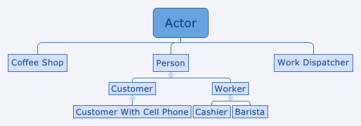
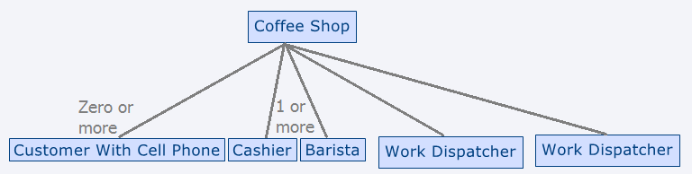

This example implements a simulation of a coffee shop using the Actor Framework. This simulation is based on the interaction model described in this article.
Actor Class Inheritance Hierarchy

Actor Tree (Caller Actors at top; Nested Actors below)

Coffee Shop
Coffee Shop is the top-level Actor in the system which models the coffee shop as a whole. Coffee Shop is responsible for launching and keeping track of all nested Actors in the system, as well as providing the primary user interface for the simulation. When it starts,Coffee Shop launches four nested actors:
Person
Person is the parent class for the remaining five Actors in the system. It is a generic model of a person, and implements functionality common to all descendants of Person in the system (generating a name for the Person and toggling whether the Person's UI is visible).
Customer
Customers are responsible for ordering drinks and picking them up once they have been completed. After all ordered drinks have been received, a Customer will leave the coffee shop. The Customer class contains the ordering interface used to create drink orders.
Customer With Cell Phone
Customer With Cell Phone is a child class of Customer that will occasionally make calls on his\her phone. While making a call, any messages sent to that Customer With Cell Phone will be delayed until the call is complete. This behavior is intended to demonstrate how Actors are free-running processes in the background. Customer With Cell Phone does not implement its own user interface, instead using the user interface provided by the parent Customer class.
Worker
Worker is the parent class for the employees of the coffee shop (Cashiers and Baristas); it defines features common to both. These include a common user interface and a set of methods all workers must implement. Workers and Work Dispatchers are designed to work together, so Workers must implement the messaging interface expected by Work Dispatcher.
Barista
Baristas are responsible for making the drinks. Drink tasks are
received from the Work Dispatcher connecting the Cashiers to the
Baristas.
Upon launch, a Barista sends an Add Available Worker message to
its Incoming Work Dispatcher, which can send the Barista a Process Job
message containing the details of a drink to be made.
Once a barista has completed a drink, a message is sent to the
Customer associated with that order. In addition, the Barista puts
itself back on the work queue by sending an Add Available Worker
message to its Incoming Work Dispatcher.
Cashier
Cashiers are responsible for taking drink orders from customers.
A drink order reaches a cashier via the Work Dispatcher connecting
the set of Customers with the set of Cashiers. An order consists of one
or more drinks. Each drink is sent to the Work Dispatcher connecting
the Cashiers to the Baristas via an Add Task message for each drink in
the order.
Upon launch, a Cashier sends an Add Available Worker message to
its Incoming Work Dispatcher and waits for a Process Job message to
arrive from the Incoming Work Dispatcher.
Work Dispatcher
Work Dispatchers are the Actors responsible for matching pending tasks to available workers. In the coffee shop simulation, there are two instances of Work Dispatcher. The first instance represents the line of customers waiting for the next available Cashier to take their order. The second instance represents the line of drink orders waiting for the next available barista to make the drink. The Work Dispatcher is designed to be loosely coupled to the other Actors in the system. Any Actor wishing to communicate with a Work Dispatcher must implement a standard messaging interface. The Work Dispatcher itself has no knowledge of the Actors it communicates with. The Work Dispatcher abstraction permits work assigners to have no knowledge of what workers are available, and workers to have no knowledge of possible work assigners. This greatly simplifies scaling the system to many workers and many work assigners, all running in parallel.
Basic Interaction Flow
Customer creates an order (represented as a message). Order is
sent to next available Cashier via the first Work Dispatcher. Cashier
processes order, sends each drink item to the next available Barista
via the second Work Dispatcher.. Barista makes the drink and sends a
callback message to Customer informing them that their drink is ready.
Once Customer receives all drinks, Customer exits shop.
At any point in this sequence, a Customer may tune out on his/her cell
phone or may leave the shop without waiting for his/her drinks.